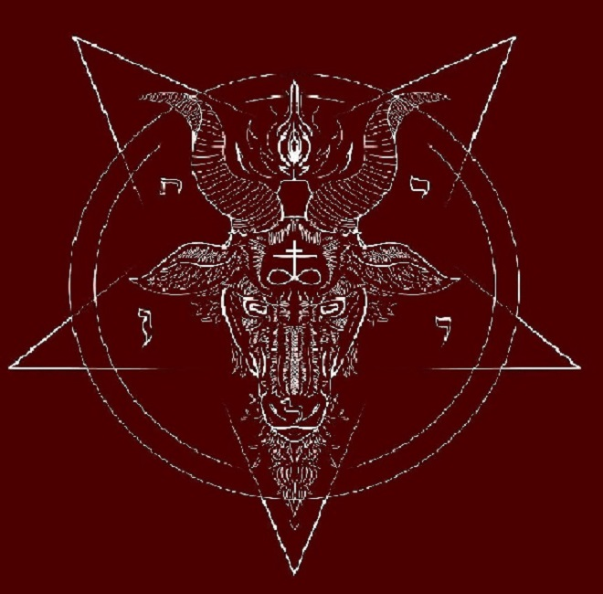
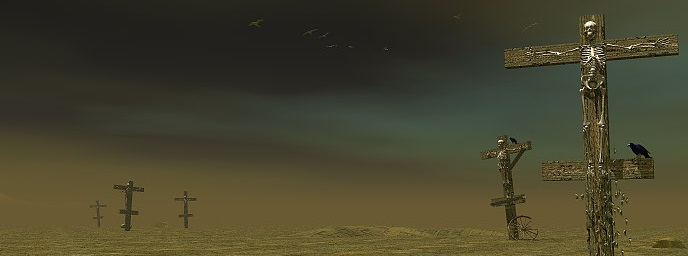
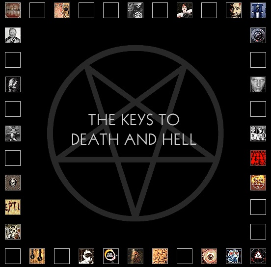
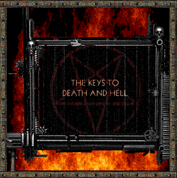
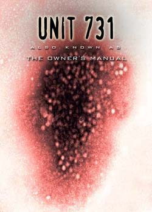
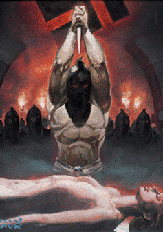
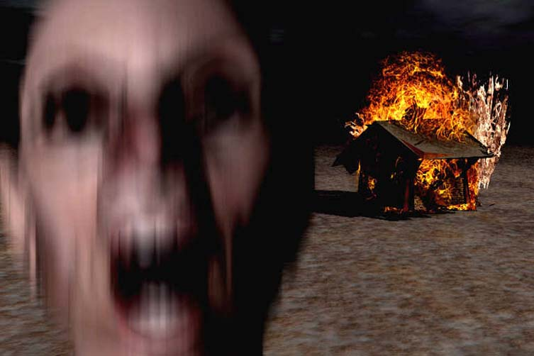

"✡THE CAFE HOUR✡"
((THE CAFE HOUR, Es una pagina creada y dedicada a archivar y guardar las paginas y momentos de la interenet antigua
En este sitio encontraras paginas web antiguas algo peculiares y relevantes como "Sentimental corporation" Y "Deth and hell, Puedes encontrar algunos sitios con contenido explicito como pornografia, sitios satanicos, sitios de canibalismo y sitior con tematica satanica. NAVEGUE CON PRECAUCION))
En internet encontramos diferentes tipos de sitios, algunos raros y algunos que parecen creado por las mentes mas retorcidas del mundo, A continuacion entraras en contexto de algunos sitios interesantes y su resectivos enlaces...

Death and hell empieza con una introduccion donde epxplica que 18 meses antes de su muerte descubrio lo que en realidad es el mundo y la vida, Y diciendo que esta pagina se trata de un resumen de varios recortes de articulos, ciencia ficcion y sucesos en el reyno de el cultismo todo esto sumamente apegado para hacer una escultura tambien llamadas llaves de la muerte del infierno

Para entender las llaves de la muerte del infierno nos tendremos que ir a el articulo de la biblia apocalipsis 1,18 que nos relata que (Y el que vivo, y he sido muerto: y he aqui ue vivo para siemore jamas, amen. Y tengo las llaves del infierno y de la muerte) Basicamente explica que jesus estubo muerto pero que ahora esta vivo por toda la eternidad gracias a que tiene la llave de la muerte y del infierno, Teniendo control sobre la vida y de la muerte Y teniendo el control de darle vida eterna a quien lo sigan por los siglos de los siglos.
La informacion puede ser algo confusa, al igual que la introduccion pero al adentrarnos mas nos encontramos con un pentagrama invertido que contiene las llaves de la muerte y de el infierno convertida en una enciclopedia interactiva, aun que si prestamos atencion hay recuadros vacios como si el autor no pudiese terminarla pagina


Si nos adentramos aun mas a esta extensa pagina encontraremos algunas historias y textos sacadas de sus pensamientos y experiencias en la universidad, aun que lo mas interesante es al llegar a la galeria de arte de "charles manson" que es uno de los criminales y asesinos en serie mas conocidos de la historia, ademas de algunas pinturas algo extrañas de las cuales se desconose su origen, Mas adelante veremos fotografias de charles manson en viajes desde su niñes y incluso el nacimiento de su hija, Tambien podemos ver que siempre fue fanatico de lo cultismo debido a su alta extencidad de simbolos y referencias satanicas
Hay una seccion "llamada Perfect vessel" donde hay fotos de una mujer mostrando su vagina donde parece ser la misma mujer en todas las fotos
Tambien esta la seccion "Satanica" donde muestra un lugar donde el pretendia crear su nueva civilizacion
Al ultimo de esta seccion encontramos un libro de visitas donde la gente deja sus comentarios acerca de la pagina, donde de echo solo an comentado dos personas una de ellas explica que ese sitio esta creado para distraer a la poblacion americana de los bombardeos en irak y que por eso el creador tiene un nombre musulman???
Esta pagina es sumamente extensa! Aun no le encuentro el fin, incluso empiezo a pensar que esta pagina fue creada con el propocito de una biblioteca antiuga
Ahora resumire todos los apartados interesantes ya que como eh dicho esta pagina es sumamente extensa y seria imposble explicar todo, ya que esta echa a partir de los pensamientos de una persona de mente dudosa
Nos encontramos con la seccion del "escuadron 731" que por si no lo sabes es un escuadron japones que hacia experimentos de dudosa etica con los seres vivos (Humanos), En esta seccion nos encontramos con algunos fetiches raros que se practicaban en ese escuadron como: violacion a menores, sexo con menores, sexo con cadaveres animales e incluso con seres humanos en etapa de descomposicion, ademas hay un link que trata de un manual donde te dice los placeres de hacer este tipo de actos segun el escuadron ya mencionado.



Publicaciones de magia oscura
En la seccion de magia oscura la cosa se pone mas perturbadora ya que se abla sobre tener sexo con un demonio llamado "vessel" que por lo que se deja entender en los textos se trata de personas que murieron por motivos de sustancias ilicitas... pero la palabra vessel la habiamos escuchado en una seccion anterior donde se encuentra una chica a la que le apodo vessel, lo que nos deja entender algo muy turbio... Seguido de esto hay un texto que dice "Ahora se que todos ustedes an tenido relaciones con demonios, pero tener sexo con un vessel es algo muy diferente a tener sexo con animales atropellados"
Tambien encontramos una seccion llamada "La camara de la habitacion" donde abla de un templo del terror con cosas muy poco agradables como violaciones anales a cadaveres...
Siguiendo de esto hay otra seccion llamada "Orullo satanico 2001" que dice que la sociedad estadounidense debe exigir la legalizacion y regulacion de las practicas satanicas ya que los sacrificios sirven mucho para estas practicas y que ademas pueden ser beneficiosos para la poblacion, Pero en la misma seccion se encuentra una subseccion que da la bienvenida a los que sean propietarios de algun vessel que si no entendiste que es un vessel es un cadaver que puedes manejar a tu antojo, Esta subseccion promete que puedes tener modificaciones al ADN mediante la magia oscura.
SEPTIC
En esta seccion es una especie de manual para seguir con las violaciones y tambien abla sobre como embarrarse de escremento mientras se practica, Tambien abla sobre las manipulaciones del gobierno de estados unidos durante la guerra de irak
Tambien abla de algunos encantamientos para invocar demonios e incluso invocar a thor y que acabe con los demonios que estan detras de ti y tis seres apreciados como tus vessels
Conclucion
Al final nos abla de que el sitio fue cerrado por ser la pagina del mundo y contener cosas que se consideran obsenas y poco eticas aunque este sitio ya fue revisado y visitado por el departamento de defensa de los estados unidos para la investigacion de su creador, Pero que es todo lo que acavamos de ver?, pues lo mas seguro es que fue creada por personas que tenian problemas con las sustancias ya que en varias ocaciones se abla de sustancias para drogarse y llegar a otro "universo" Tambien lo mas seguro es que tenian una adoracion al satanismo y fetiches sexuales algo raros, Lo mas probable es que de todos lo que se abla sean alucinaciones e historias inventadas por el o los cradores, pero esto no quita todo lo asqueroso y perturbador de lo que se abla pero eso no quita que sea una pagina interesante y seguro que una de las paginas mas perturbadoras de internet.